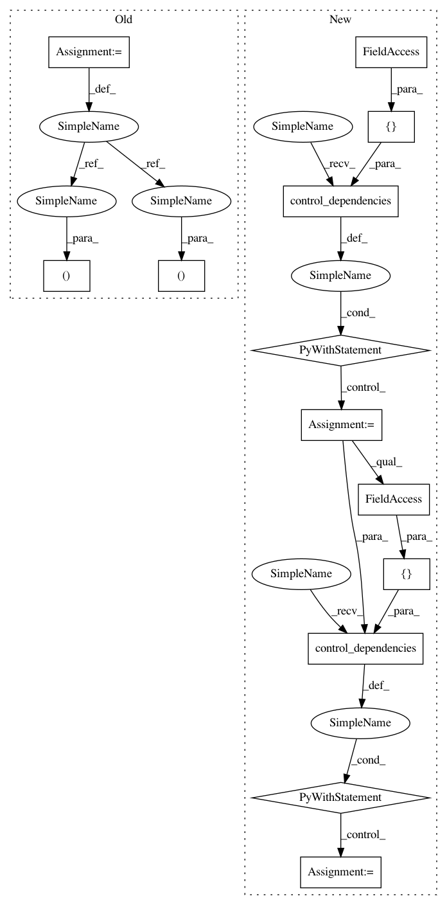

230503ac56636d91d53d728c247c6ea3d096eeb9,tf_agents/environments/tf_environment_test.py,TFEnvironmentTest,testAutoReset,#TFEnvironmentTest#,232
Before Change
tf_env = TFEnvironmentMock()
_, step_state = tf_env.current_time_step()
self.evaluate(tf.global_variables_initializer())
_, step_state = tf_env.step(1, step_state)
_, step_state = tf_env.step(2, step_state)
time_step, _ = self.evaluate(tf_env.step(3, step_state))
self.assertEqual(FIRST, time_step.step_type)
self.assertEqual(0.0, time_step.reward)
self.assertEqual(1.0, time_step.discount)
After Change
tf_env = TFEnvironmentMock()
time_step = tf_env.current_time_step()
self.evaluate(tf.global_variables_initializer())
with tf.control_dependencies([time_step.step_type]):
time_step = tf_env.step(1)
with tf.control_dependencies([time_step.step_type]):
time_step = tf_env.step(2)
with tf.control_dependencies([time_step.step_type]):
time_step = self.evaluate(tf_env.step(3))
self.assertEqual(FIRST, time_step.step_type)
self.assertEqual(0.0, time_step.reward)
In pattern: SUPERPATTERN
Frequency: 3
Non-data size: 13
Instances
Project Name: tensorflow/agents
Commit Name: 230503ac56636d91d53d728c247c6ea3d096eeb9
Time: 2018-11-30
Author: sguada@google.com
File Name: tf_agents/environments/tf_environment_test.py
Class Name: TFEnvironmentTest
Method Name: testAutoReset
Project Name: tensorflow/agents
Commit Name: 230503ac56636d91d53d728c247c6ea3d096eeb9
Time: 2018-11-30
Author: sguada@google.com
File Name: tf_agents/environments/tf_py_environment_test.py
Class Name: TFPYEnvironmentTest
Method Name: testTwoStepsDependenceOnTheFirst
Project Name: tensorflow/agents
Commit Name: 230503ac56636d91d53d728c247c6ea3d096eeb9
Time: 2018-11-30
Author: sguada@google.com
File Name: tf_agents/environments/tf_environment_test.py
Class Name: TFEnvironmentTest
Method Name: testTwoStepsDependenceOnTheFirst
Project Name: tensorflow/agents
Commit Name: 230503ac56636d91d53d728c247c6ea3d096eeb9
Time: 2018-11-30
Author: sguada@google.com
File Name: tf_agents/environments/tf_environment_test.py
Class Name: TFEnvironmentTest
Method Name: testAutoReset